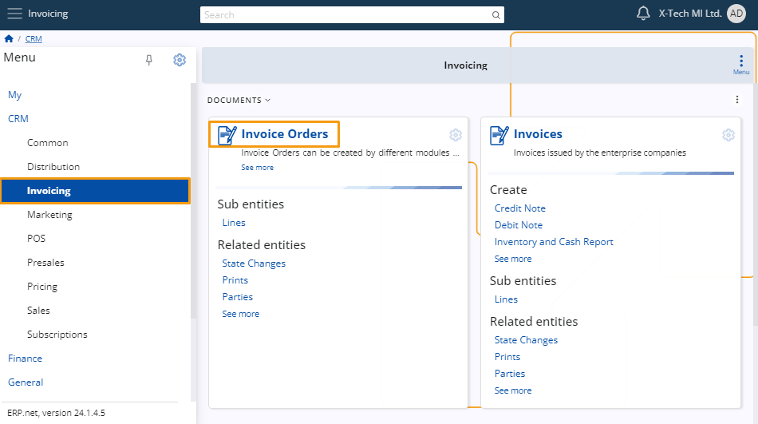
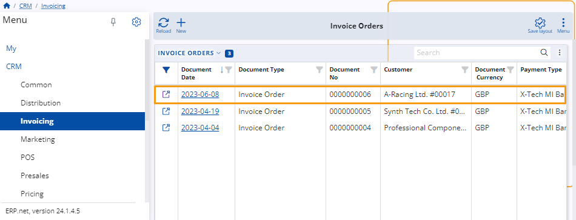
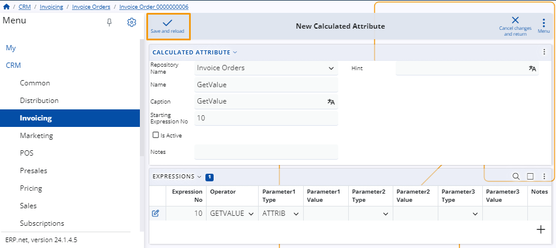
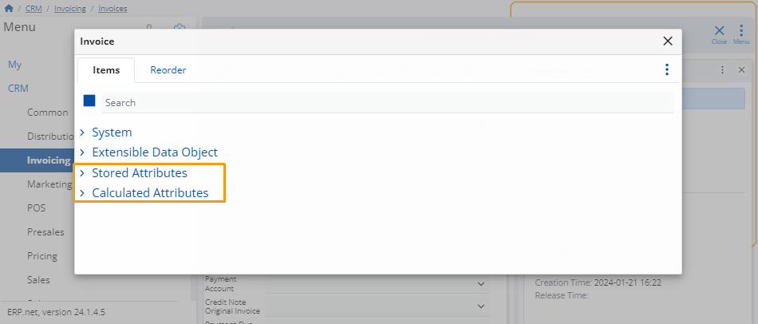

A Step-by-Step walkthrough for creating new stored or calculated attribute in ERP
While customizing a form, you have the option to introduce either a new stored attribute or a new calculated attribute. The inclusion of these fields will be automatically reflected in the form you are currently customizing.
Example
Head to the Invoicing page within the CRM menu and access the Invoice Orders panel.

Once there, a list of orders will be displayed. Select the specific order you intend to modify.

Within the Invoice Order's page, open the menu of the Invoice Order panel and click on the Customize Panel button.

This action will open a window with two tabs. Navigate to the Items tab and access the menu at the top right corner. Choose either Add New Stored Attribute or Add New Calculated Attribute.

To introduce a new attribute, fill in the details for the New Calculated/Stored Attribute and click the Save and Reload button to apply the changes.

In the Items list, you'll find dropdown menus corresponding to the two options in the previous step.

The new attributes will be automatically added to the corresponding lists. Activate the attributes you need by using the sliding buttons.